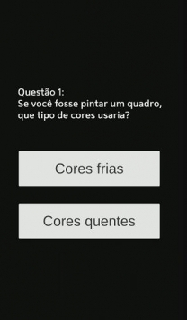

我用Petpet Generator拍了三天同事头像，终于摸透了这个让群聊炸锅的神器
上手实测Petpet Generator：参数滑块拉满、reset一键救场、侧脸flip顺方向，从群聊里被摸头的快乐到分享时踩过的坑，全给你唠明白。
上周QQ群里突然炸了——有人开始用"拍头"表情包，就是那种手掌从上方拍下来把你头像按扁又弹回去的鬼畜动图。一开始我以为是某个群友自己做的，结果连续好几天，我换什么头像都能被拍，甚至连侧脸的二次元头像都能精准拍到头顶。
忍不住了，我去问了群里最活跃的表情包大佬，他甩了一个官网链接过来：Petpet Generator。说这玩意儿最近火得离谱，群里一半人在用，没人用的那一半也在偷偷学。
我打开一看——就是个网页，左上角一个上传框，右边一堆滑块，中间一个实时预览区。没有花哨的注册登录，没有复杂的安装步骤，也不需要单独下载客户端，拖张图进去就能玩。说实话，我一开始是抱着"又一个花架子小工具"的心态点进去的，结果一玩就是三天，把群里所有同事的头像拍了个遍。

第一眼：简洁到让人不敢信
界面真的太干净了。没有广告弹窗，没有付费墙，甚至连"高级版"按钮都没有——所有参数全开放，滑块随便拉。我先拖了自己的工作照进去，手掌立刻从头顶上方"啪"地拍下来，头被压成扁平的大饼脸，然后"嘣"地弹回原状，循环往复。
等一下，我刚才那是在跟自己的头像玩得不亦乐乎？
参数面板的滑块我数了下，核心的有speed（速度）、squish（挤压幅度）、size（头像占比）三个，还有adjust mode（调整模式）、flip（左右镜像）、reset（重置）几个辅助开关。每个滑块拖一下，预览区实时更新，没有卡顿，没有加载转圈，这体验比我预期的流畅太多。
拍头的快乐，全在那几个滑块里
说实话，我之前以为"拍头"就是个固定模板，调不调参数都那样。现在才发现——参数搭配才是精髓。
最让我上头的配方是鬼畜版：speed拉满，squish拉满，size设成100%让头像撑满画框。拍下来的时候头被压得扁到五官都变形，弹回去又立刻恢复正常，节奏快到像在疯狂抖动。我把我老板那张严肃的证件照传进去，调完之后差点没忍住直接发群里——头被拍得下巴贴胸口，整个人散发着"这也太离谱了"的喜感。
但这里有个新手很容易踩的坑：speed和squish都拉满的话，GIF体积会爆炸。我导出了一张，文件大小直接冲到了20MB——微信表情栏根本不认，发出去就被压成静态图。后来才发现要把output size降到128px，speed也别拉太满，控制在25-35之间，体积立刻压下来了。
reset 和 flip：两个被低估的小功能
调参数的时候我经常调着调着就懵了——"我刚才把speed从多少拉到多少来着？squish刚才是不是设成40？" 滑块太多，每个值又都能改，改完记不住原来的状态是常事。
reset 按钮就是救星。点一下，所有参数瞬间回到默认值，干净重来。没有"确定要重置吗"的弹窗，点了就生效——我一开始还担心误触，后来发现反而省了好多确认的时间，真的调乱了直接reset比一个个往回拉快太多。
flip 开关是另一个惊喜。我有个同事用的是侧脸头像，朝左的。手掌从上往下拍的时候，脸像是在扭过去"不让拍"，看着特别别扭。开了flip之后脸朝右，正好对着手掌拍下来的方向——那个感觉，从"抗拒"直接变成了"乖乖被摸"，喜剧效果翻倍。后来去查了Petpet Generator文档才发现adjust mode还有更细的玩法，暂停在手掌拍到底的那一帧能精准对齐头顶位置，比我之前瞎调靠谱多了。
分享到群里没动？先自测再说
导出GIF之后，我第一反应就是发群里显摆。结果好几次发出去，群友说"你发了张静态图？"——尴尬到抠脚。
后来才搞明白，几乎所有聊天平台都有GIF大小限制，超过阈值直接压成静态。微信表情栏只认2MB以内的，Discord免费用户超过10MB就得开Nitro。我现在养成了一个习惯：导出之后先给自己的文件传输助手发一份，确认三件事——还在动、没有变形、体积够小，再发群里。
适合谁，不适合谁
如果你跟我一样，是群聊里活跃的表情包党、喜欢用鬼畜动图怼人、或者就是想给同事们找点乐子——Petpet Generator绝对值得玩。几分钟就能上手，调参数调出来的效果能承包一整天的笑点。
但如果你想做专业的动画、或者需要复杂的帧级编辑——这玩意儿帮不上忙。它的定位就是个轻量好玩的表情包生成器，别指望它当PS用。
这几天我把Petpet Generator的参数摸得差不多了，从鬼畜配方到跨平台分享的注意事项，网上的教程里都写得挺详细的——相关的开源资料也同步放在了GitHub、Gitee和GitCode三个仓库里，方便不同网络环境的朋友访问。我自己玩的这几天最直观的感受就是：一个好的小工具，不需要花里胡哨的功能堆砌，把一件事做透、做顺手，就够让人上瘾了。如果你还没试过，趁现在群里还没人拍你头像，赶紧去官网生成几张防身——别等被拍了才想起找工具。